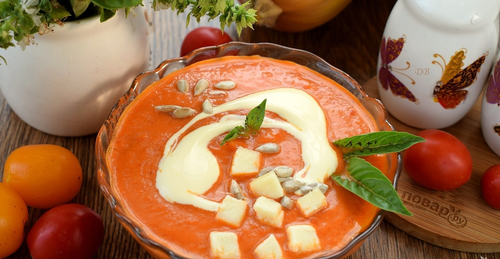

приготовление:
-
Подготовка Заранее приготовить овощной бульон. В литре воды варить 30-40 минут овощи: 1 луковицу, 1 морковь, 1 картофелину, 2 палочки сельдерея, листья порея, кусочек капусты, зелень, лавр, душистый перец. Тыкву 600 гр. приготовить на пару минут 10-20: кусочками, но оставив на ней кожицу. Дать немного остыть.
-
Помыть и порезать 2 черешка сельдерея и 1 большую луковицу, обжарить несколько минут на сковороде с маслом. Туда же отправить 2 банки томатов в собственном соку.
-
Бульон процедить, поставить на огонь. Почистить 2 картофелины, нарезать на небольште кусочки, кинуть в бульон. Помыть и порезать 0,5 порея, отправить в бульон. Посолить и поперчить. Варить до готовности (минут 15). Добавить в бульон зажарку, поварить еще пару минут.
-
Отправить все в блендер. Добавить копченую паприку, сушеный чеснок и кориандр, проверить на соль и перец. Подавать с крутонами/тостами. По желанию можно добавить сверху немного моцареллы, тыквенных или кунжутных семечек.